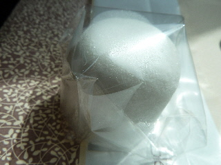

大福堂の落雁
2013/06/16
おまんじゅうみたいな落雁です。

中には白あんが入ってて、さらにお饅頭みたいでした。
若いころはこうゆう砂糖菓子って、甘すぎてちょっと...な感じでしたが、なんだか美味しく感じるようになってきました。
大福堂さんは、住宅の横に小さな作業場があるお店でした。
お店に人がいないときは、お家にいけばいいのかな。
島根県出雲市平野町733-3
2013/06/16
おまんじゅうみたいな落雁です。

中には白あんが入ってて、さらにお饅頭みたいでした。
若いころはこうゆう砂糖菓子って、甘すぎてちょっと...な感じでしたが、なんだか美味しく感じるようになってきました。
大福堂さんは、住宅の横に小さな作業場があるお店でした。
お店に人がいないときは、お家にいけばいいのかな。